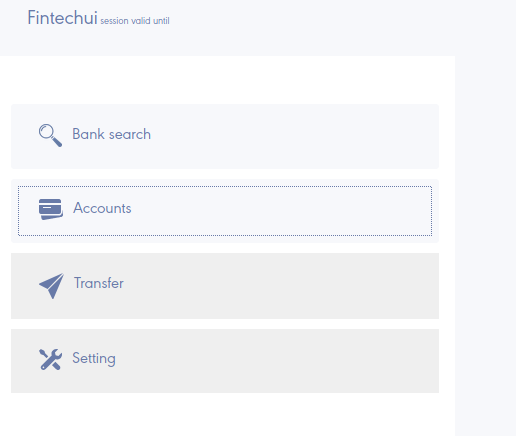
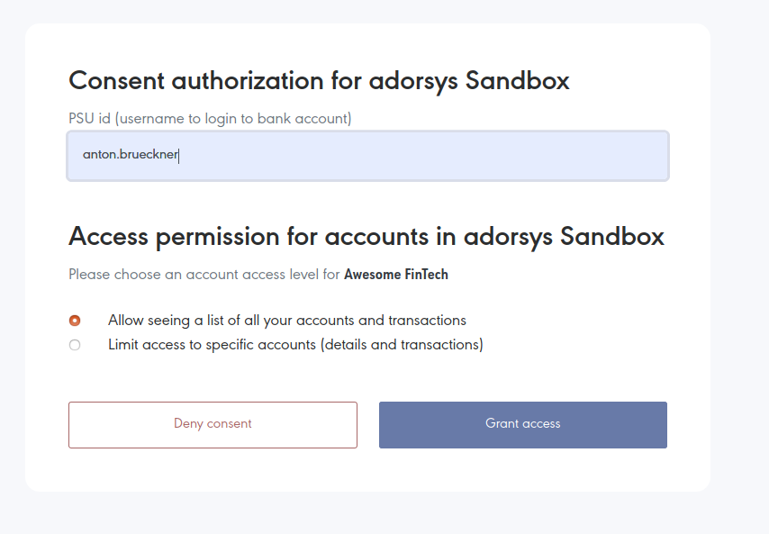

Introduction
For the project demonstration, we provide you links and guideline of how to use our DEV environment. Please note that as it is DEV environment it might get unstable on occasion.
Environment details
Our DEV environment is configured to use Adorsys Dynamic Sandbox that closely imitates real ASPSP (Bank) with full set of XS2A-API functionality.
Environment location and guide
Location
Environment is hosted at: https://obg-dev-fintechui.cloud.adorsys.de
Demo video guide

Guide transcript
1. Login to FinTech
When you open https://obg-dev-fintechui.cloud.adorsys.de you will see FinTech example application login screen. It will allow you to use any not-registered user name with arbitrary 4 character password. I.e. type any random username and password '1234'.

2. Bank selection
After you log in to the FinTech sample application, you will see bank selection screen there, you need to select your bank. Select 'adorsys xs2a'.

3. Asking for the account list
On the next screen, you want to see your account and transaction list at the selected bank. Click on accounts button.

4. Redirection to OpenBanking server
FinTech will ask you to redirect to OpenBanking server in order to provide consent to perform account and transaction listing. Click on the OK button.

5. Register in OpenBankingGateway
Because users consent might be shared (if user allows) across multiple FinTechs', you will be prompted with login screen in OpenBankingGateway.

Click on register button to create new user, you will be prompted with another form. Fill username with random username and password i.e. '1234'.

Click on register button, you will be redirected back to login form. Fill the login form with credentials you used to register and login.
6. Consent scope selection
After you have logged in to OpenBankingGateway, you will see Consent grant screen:

Type 'anton.brueckner' to PSU ID field. Click Grant access.
7. Consent review
You will see consent review screen:

Click on confirm button.
8. Consent authorization
On the next step you will enter either EMBEDDED consent authorization or REDIRECT consent authorization
that will depend on current ASPSP configuration. All you need is to follow on-screen instructions
and to fill forms with these values:
- login: anton.brueckner
- PIN/Password: 12345
- SCA/TAN challenge result: 123456
9. Redirect back to FinTech
After you have granted the consent you will be redirected back to FinTech:

Click on 'Back to Awesome FinTech'
10. Account list at FinTech UI
You will be redirected back to FinTech and you have granted the consent to the FinTech to read your account list. Click on 'Accounts' button and you will see your accounts (anton.brueckner's accounts):